擅长生产过程控制、客诉分析与闭环处理，熟练搭建原料验收及生产验证体系，持续提升产品一次合格率与现场质量水平。
兼具现场质量管理与客户质量管理经验，能够从客户需求及生产实际角度推动问题解决。
希望将食品质量管理经验与AI技术结合，打造智能化质量管理模式，提升企业合规管理与运营效率。
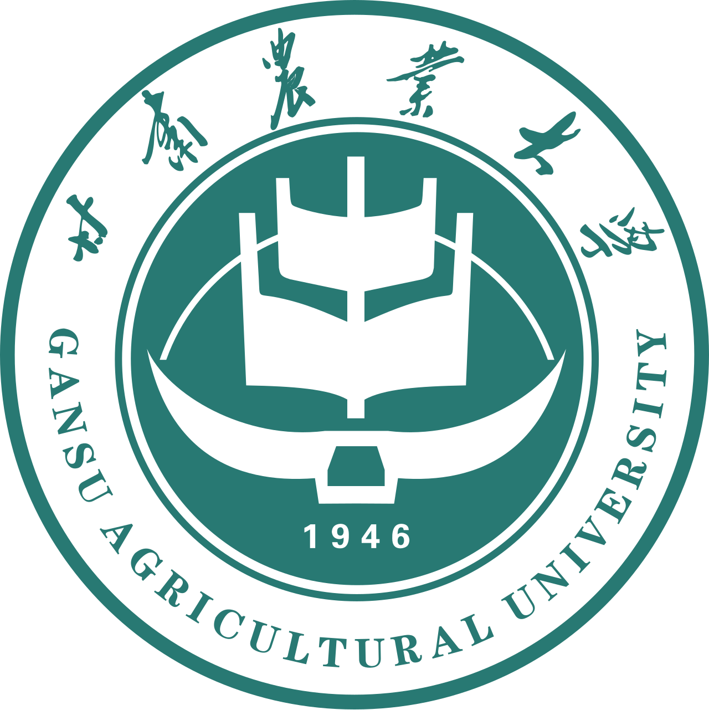
甘肃农业大学 · 甘肃兰州
系统学习食品科学、食品安全检测、食品法规与标准等核心课程，奠定了扎实的专业理论基础。
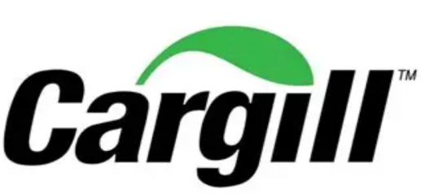
嘉吉食品科技（平湖）有限公司 · 浙江嘉兴
牵头从零搭建新工厂原物料验收体系，制定全品类（含原料、添加剂、包材等）验收标准、作业流程及判定准则，开展新员工专项培训，保障入厂原物料质量可控。
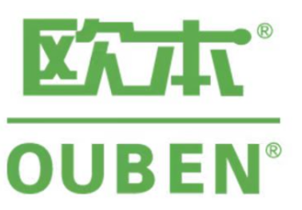
欧本食品（上海）有限公司 · 上海金山
参与/主导 50 余次客户审核，均以零关键不符合项通过审核，并跟进客户审核发现项整改，保证客户满意和市场准入。
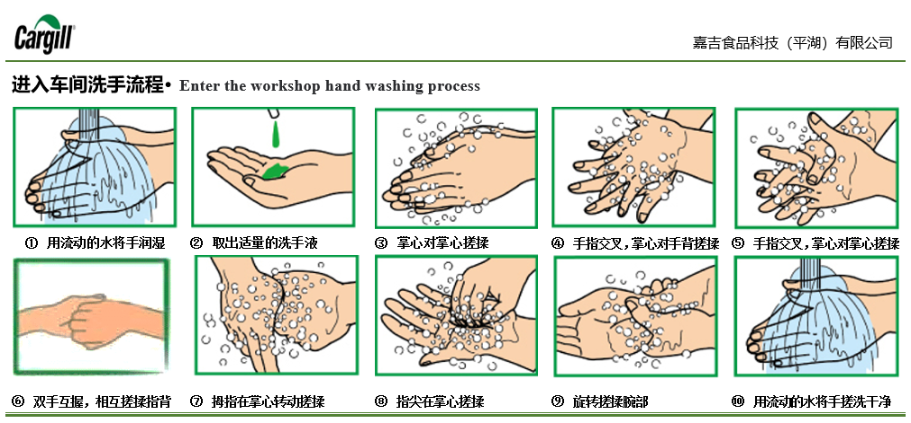
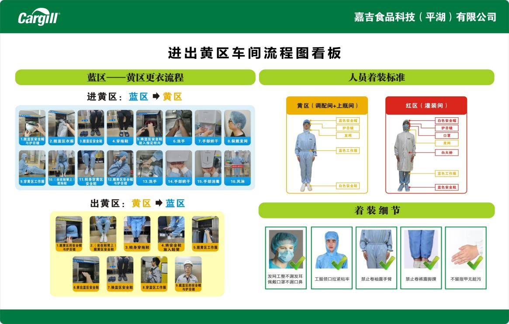
制作新车间各种操作流程与食品安全宣传海报，将规范操作以图文并茂的方式呈现，让标准化流程深入人心，显著提升了现场员工的合规操作意识。
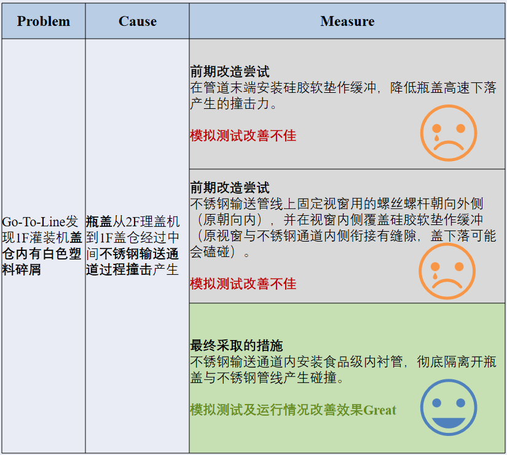
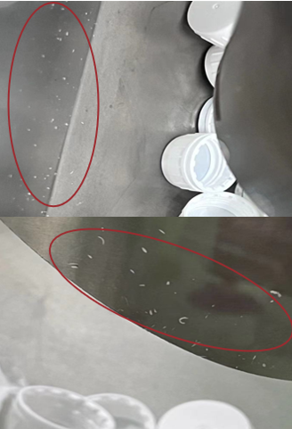
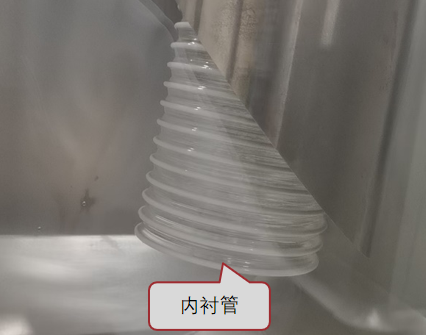
现场巡检发现瓶盖输送过程中与管壁磕碰产生塑料碎屑，旋盖过程中易引入异物。与生产同事多次尝试分析根本原因，最终成功解决该异物问题，有效保障了产品品质。
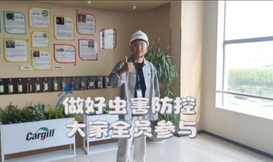
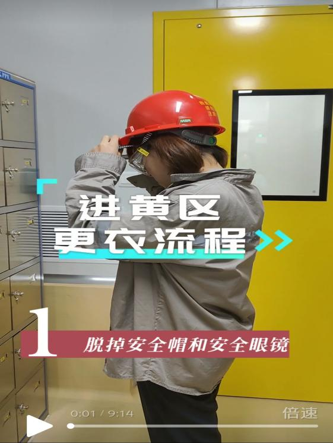
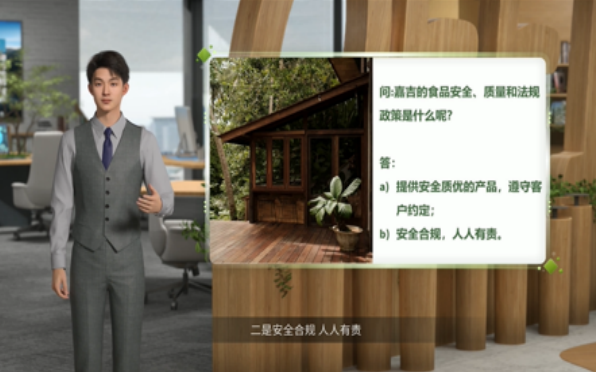
结合视频形式与 AI 技术制作多样趣味性质量培训内容，涵盖虫害防控意识、洗手更衣流程及食品安全知识，有效提高培训的趣味性与有效性，让日常操作流程扎实落地。
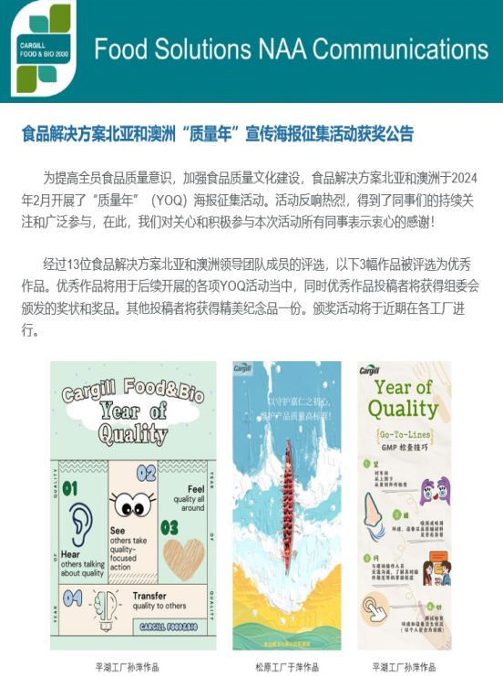
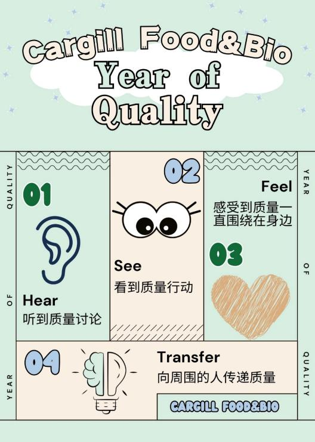
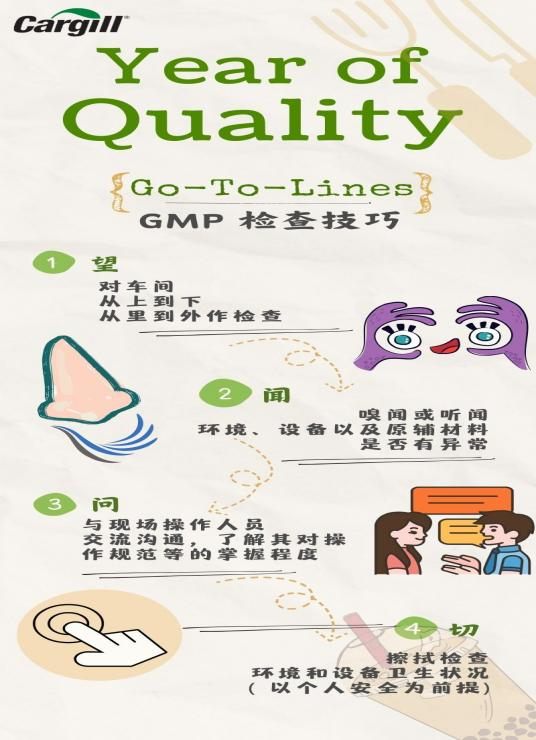
参加亚太地区 FSQR 组织食品安全文化宣传海报活动，共收到 27 幅参赛作品，最终评选 3 幅优秀作品——我设计的 2 幅海报同时入选，充分展现了在食品安全文化传播方面的创意与专业能力。
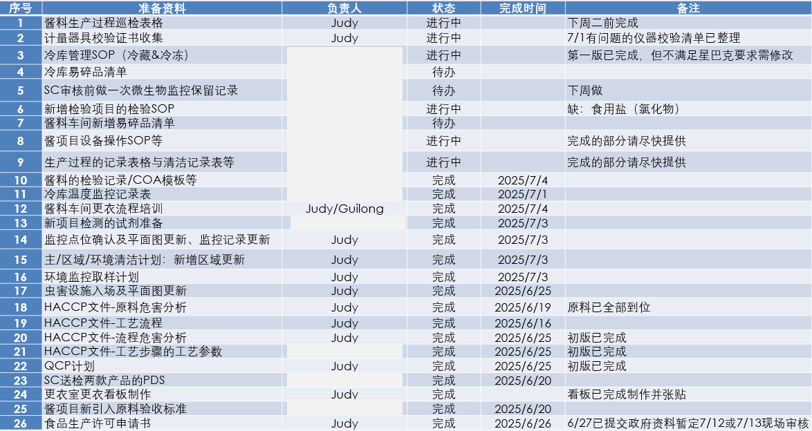
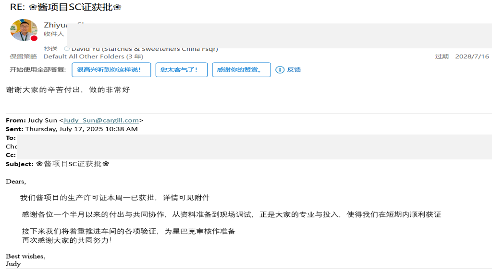
工厂新建 2 个车间——2023 年餐饮糖与 2025 年酱料车间，年产 5 万吨。全程跟进生产可行性验证，均顺利获得 SC 证并通过关键客户审核。其中 2025 年酱料项目从项目交付到获 SC 证全程仅用 1.5 个月，展现了卓越的项目管理能力。
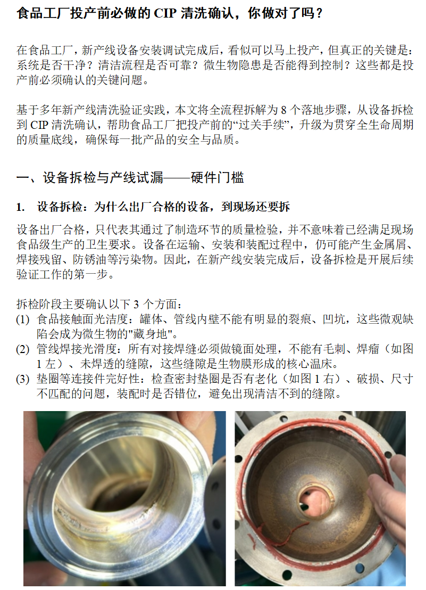
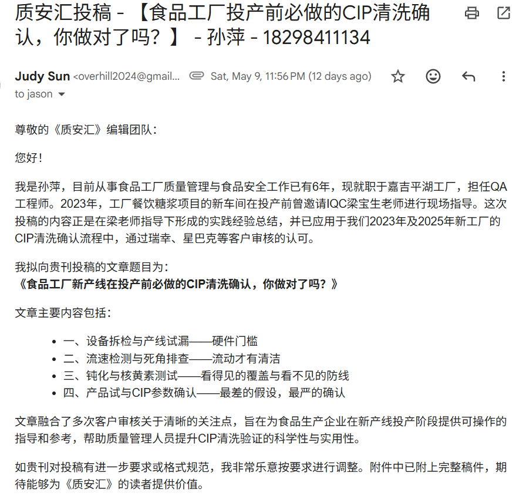
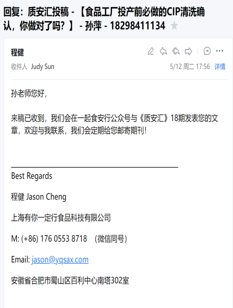
将项目实践中积累的经验与思考提炼为方法论文章，成功投稿至食品行业知名咨询平台——《一起食安行》，获得编辑认可并接收发表，实现了个人经验向行业公共知识的转化。
感谢您花时间了解我的专业经历 —— 期待有机会加入贵司团队贡献力量。